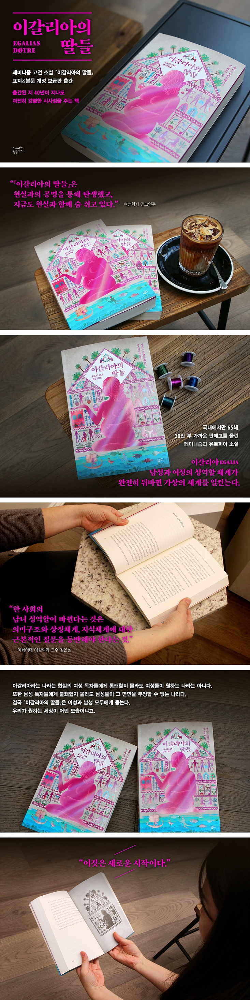

- 나 지금이대로 괜찮은 사람 - 박윤영
- 이갈리아의 딸들 - 게르드 브란튼베르그
- 사피엔스 - 유발하라리
이갈리아의 딸들
[ 책소개 ]
"유쾌한 상상력과 재치가 넘치는 페미니즘과 유토피아 소설로서, 남성과 여성의 성역할 체계가 완전히 뒤바뀐 가상의 세계 이갈리아의 모습을 그린 작품이다. 작가이자 여성운동을 펼치고 있는 노르웨이 출신 작가 브란튼베르그의 책으로 1977년 출간된 이후, 전 세계적인 반향을 일으켰다.
여성학 이론을 둘러싼 여러 가지 쟁점과 여성 운동의 역사를 담고 있는 훌륭한 여성학 교과서이기도 하다. 유럽에서는 연극으로 공연되기도 했으며, 국내에서도 소규모 상연되었다. 최근에는 『이갈리아의 딸들』을 패러디한 연극 「미러링」이 상연되기도 하였다. 현재까지 국내에서 65쇄, 20만 부 가까운 판매고를 올리며 페미니즘 소설의 대표적인 도서로 자리잡았으며, 최근 몇 년 사이 도서명을 딴 '웹사이트 메갈리아' 로 사회적 논쟁이 일기도 했다.
"경작법이 더 복잡해지고 발달된 농기구가 수확량을 증가시키면서 인간사회에 계급 분화의 기초가 등장했다.
자연적으로 움(여성)이 땅을 소유했고, 동시에 맨움(남성)을 자신에게 묶어놓고 이용할 방법을 발견하려고 애썼다…… 그들은 아이들 임신케 하는 것 외에는 기여하지 않았기 때문에 아이를 돌보는 일을 맡았다."
나는 남자가 여자 입장이 한번 되어보면 어떨까를 자주 생각해 본다. 여자들이 왜 그렇게 억울하다고 말하는지,
그리고 어떻게 남자에 대해 적대감까지 갖게 되는지를. 『이갈리아의 딸들』을 읽으며 나는 너무나 통쾌했다.
─ 오숙희 (여성학자, 방송인)
딸을 안고 있는 父성의 聖화, 커다란 난자와 그를 쫓는 조그만 정자들, 새끼를 돌보는 수컷물고기 등은 여성이 지배하고 남성이 종속된 사회의 지식체계이고 의미구조이다.
한 사회의 남녀 성역할이 바뀐다는 것은 의미구조와 상징체계, 지식체계에 대한 근본적인 질문을 동반해야 한다는 것을 이 책은 여실히 보여주고 있다.
─ 김은실 (이화여대 여성학과 교수)
이 책은 ‘맨움’의 이름으로 자신의 사회화된 성, 불행의 현실성을 인식하고,
자매애라는 지상 최고의 정치적인 연대감으로 세상과 싸워가는 모든 여성의 이름으로, 도저히 이해할 수 없다는 남성들에게 한마디 내던지고 있다. ‘너 이래도 모르겠니?’
─ 변영주 (영화감독)"

이갈리아의 딸들 구입하기